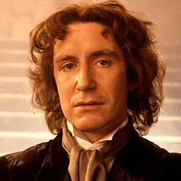

Portrayed by Paul McGann
|  |
The Eighth Doctor is the eighth incarnation of the protagonist of the long-running BBC television science fiction series Doctor Who. He was portrayed by Paul McGann. Though he appeared in only one TV film, his adventures are extensively portrayed in other media. Within the series' narrative, the Doctor is a centuries-old alien, a Time Lord from the planet Gallifrey, who travels in time in his TARDIS, frequently with companions. When the Doctor is critically injured, he can regenerate his body but in doing so gains a new physical appearance and with it, a distinct new personality. McGann portrays the eighth such incarnation, a passionate, enthusiastic and eccentric character. His only companion in the television movie is Grace Holloway (Daphne Ashbrook), a medical doctor whose surgery is responsible for triggering his regeneration. In the continued adventures of the character depicted in audio dramas, novels and comic books he travels alongside numerous other companions, including self-styled "Edwardian Adventuress" Charley, the alien Destrii and present-day humans Lucie and Sam. The Eighth Doctor was the first since the original incarnation (portrayed by the late William Hartnell) not to have his face appear in the opening title sequence, a trend that continued throughout the revived series with the Ninth, Tenth and Eleventh Doctors. |